,
,  link absorption, stimulated and spontaneous emission.
link absorption, stimulated and spontaneous emission.
Dipole approximation
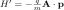
with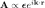
(Dirac 1927). For atoms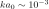
, so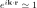
. Using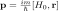
,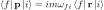
: equivalent to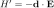
,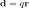
.Selection rules (proof sketch)
- Parity:
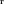
is odd, so initial and final states must have opposite parity: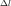
odd. - is a rank-1 tensor: by Wigner–Eckart
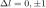
, ; combined with parity, .
. - does not act on spin: .
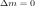
couples to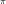
(linear, along ) light,
) light, 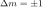
to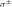
circular light.Einstein coefficients
Rates per atom: absorption
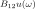
, stimulated emission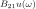
, spontaneous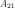
(Einstein 1917). Equilibrium with blackbody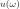
and Boltzmann populations forces and
and 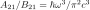
. The quantum calculation (Weisskopf–Wigner) gives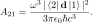
Worked example
Hydrogen
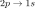
: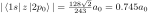
,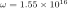
s :
: 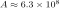
s, lifetime 1.6 ns, natural linewidth 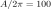
MHz. The state cannot decay by dipole emission (
state cannot decay by dipole emission (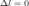
): it lives 0.12 s.Engineering applications
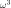
scaling explains why X-ray lasers are hard (spontaneous emission dominates). Forbidden transitions give long-lived metastable levels used as upper laser levels (Nd:YAG, Er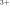
in EDFAs) and optical clocks (Sr, Yb).Pitfall
"Forbidden" means forbidden in the dipole approximation: magnetic dipole and quadrupole transitions still occur,
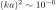
times slower.